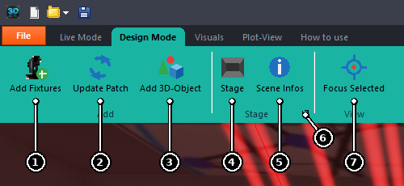
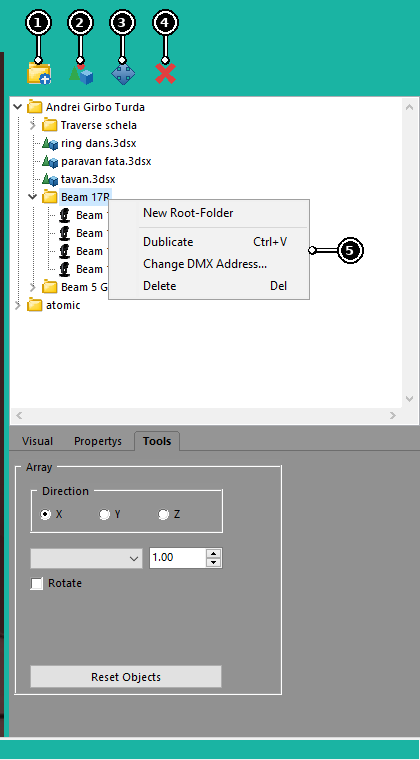
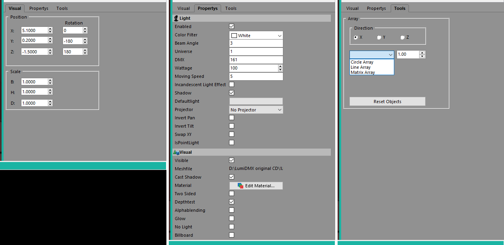

For: FullPlayer
Design Mode is where the scene is built: the stage, the objects (truss, walls, screens) and the fixtures, each in its place and with its DMX address. Nothing is written to the project until you save it (File > Save).
The button How to Add fixtures on the How to use tab opens a short help with all of this, inside the 3D.

| 1 | Add Fixtures - choose a fixture profile (.lfi2), fill in Universe, Start address, Quantity (pieces) and Spacing (channels), then press Create fixture(s). They go into the folder selected in the list (with nothing selected, into a new "New Folder"); with a Group name they get a folder of that name. They all appear at the same place - spread them out with Position or the Tools page. |
| 2 | Update Patch - brings in the fixtures patched in LumiDMX Remake (the project open there now) that are not in the 3D yet. A fixture whose universe and address are already used in the 3D is left out. They go into the folder selected in the list. |
| 3 | Add 3D-Object - a model from lib\models (truss, stage parts ...), at the centre of the selection, in the folder selected. |
| 4 | Stage - the size of the stage, its six sides (colour or texture) and its light. |
| 5 | Scene Infos - how many objects, lights, points and polygons the scene has (a big scene is slower). |
| 6 | The small corner button of Stage: the Stage Editor (the same as the Stage button). |
| 7 | Focus Selected - while it is pressed, the camera keeps the selection in the middle of the view. |

| 1 | Add Folder - a new folder inside the folder selected (at the top when nothing is selected). |
| 2 | Add 3D-Object - the same as the ribbon button. |
| 3 | Add DMX Transformation Node - a folder whose content can be moved and turned by DMX (a moving truss, say). Set it up on the Propertys page, DMX Transformation. |
| 4 | Delete Item (red X) - deletes the item clicked last, with everything inside it. It asks first. |
| 5 | The right-click menu: New Root-Folder (a folder at the top), Dublicate (Ctrl+V - a copy with everything inside, at the same place), Change DMX Address... (a new universe and address for the selected fixtures; with several it can count the addresses on) and Delete (Del). |
| click | On an item in the list: only that one is selected. A folder selects everything inside it. |
| Ctrl+click | Adds an item to the selection, or takes it out. |
| Shift+click | Everything from the item clicked before down to this one (only what is shown: the items of a closed folder are not taken). |
| right-click | In the 3D view: selects the object under the mouse. |
| Shift/Ctrl+right-click | In the 3D view: adds the object under the mouse to the selection. |
| drag | Drag items from the list onto a folder to move them into it. Their place on the stage does not change. |
A selected fixture has an orange frame in the 3D view, and its address (1:161 = universe 1, address 161) is written next to it.

From left to right: Visual (place, rotation, scale), Propertys (the light and the look) and Tools (arrays).
A row you change goes to every selected item: the Light rows to every fixture, the Visual rows to every object. The page shows the values of the last one selected.
| Row | What it does |
|---|---|
| Enabled | The fixture gives light. |
| Color Filter | A colour glass in front of the lamp (White = none). |
| Beam Angle, Universe, DMX | Only shown. The angle comes from the profile; change the address with Change DMX Address... |
| Wattage | How strong the light is: 100 = as the profile gives it, 200 = twice as strong. |
| Moving Speed | How fast pan and tilt follow the DMX. |
| Incandescent Light Effect | A halogen lamp: it lights up and goes out slowly. |
| Shadow | The fixture casts shadows. |
| Projector | A projector source for the fixture; No Projector = none. |
| Invert Pan, Invert Tilt, Swap XY | For a fixture hung the other way round. |
| IsPointLight | Light all round (a bulb) instead of a beam. |
| Visible, Meshfile, Cast Shadow | The object is drawn, its 3D model file, it casts shadows. |
| Material (Edit Material...) | Colour, texture and shine of the object. |
| Two Sided, Depthtest, Alphablending, Glow, No Light, Billboard | How the object is drawn: both faces, transparency, glow, not lit, always facing the camera. |
Select the objects, choose the Direction (X, Y, Z), the kind - Circle Array, Line Array or Matrix Array - and the value: the radius of the circle or the distance between them. They are laid out at once, at every change. Rotate turns each one to its angle on the circle; Matrix Array asks how many columns. Reset Objects puts them back where they stood when you selected them.